Personalized multi-label disease risk detection on 100,000 Indian patient records — replacing static WHO thresholds with cohort-specific, data-driven reference ranges learned from real Indian diagnostic data.
Current blood report interpretation uses one-size-fits-all population-wide thresholds. This ignores fundamental demographic variation across India's diverse patient population.
A 22-year-old athlete and a 60-year-old with hypertension share the same "normal" HbA1c threshold under global WHO/ICMR standards — despite having radically different risk profiles. Indian labs use their own display ranges, yet no ML system has learned from them at scale.
A cluster-adaptive system that groups patients into cohorts via unsupervised learning, then learns reference ranges from what Indian diagnostic labs actually consider normal — enabling personalized multi-label risk scoring.
A 7-stage end-to-end system from raw HuggingFace data to personalized risk reports.
NidaanKosha-100k (HuggingFace) — 6.84M readings, long format
pivot_table: one row per patient, 109 test columns + missingness indicators
LOINC standardization, unit normalization, KNN imputation, z-score scaling
55 PCA components (95% variance) → K-Means k=5 → tSNE visualization
Per-cluster 5th–95th percentile reference ranges from 71 biomarkers
6-label detection: Anaemia, Diabetes, Dyslipidemia, Kidney, Liver, Thyroid
XGBoost + LightGBM + AdaBoost + SMOTE for imbalanced rare conditions
from datasets import load_dataset
ds = load_dataset("ekacare/NidaanKosha-100k-V1.0")
df = ds["train"].to_pandas()
# Long format → 6.84M rows × 9 columns
# Pivot to wide: 99,992 rows × 109 test columnsUnderstanding 100,000 patients across demographics, test distributions, and data quality before any modelling.
⚠ Significant class imbalance — Diabetes Risk at 8.18% vs Liver Stress at 26.78% — motivates SMOTE oversampling in ensemble stage.
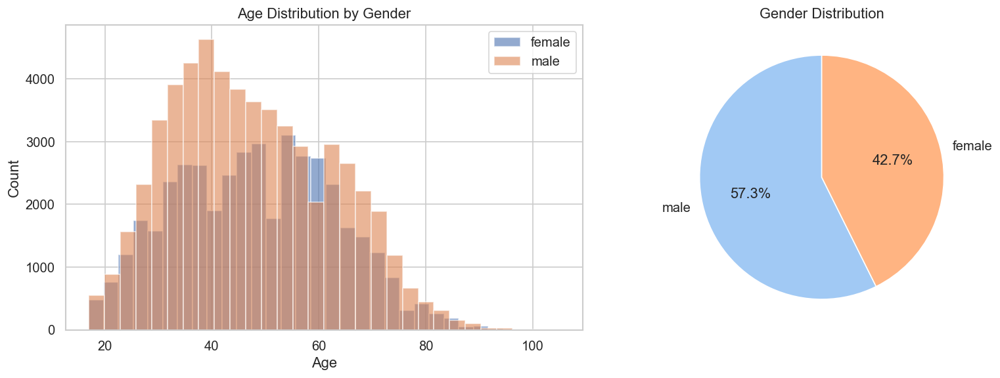
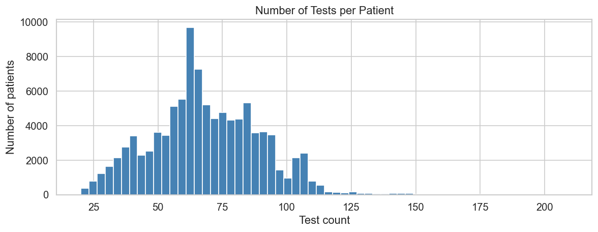
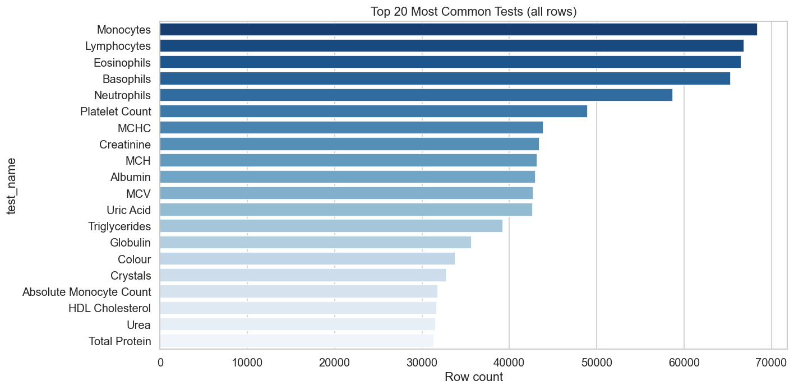
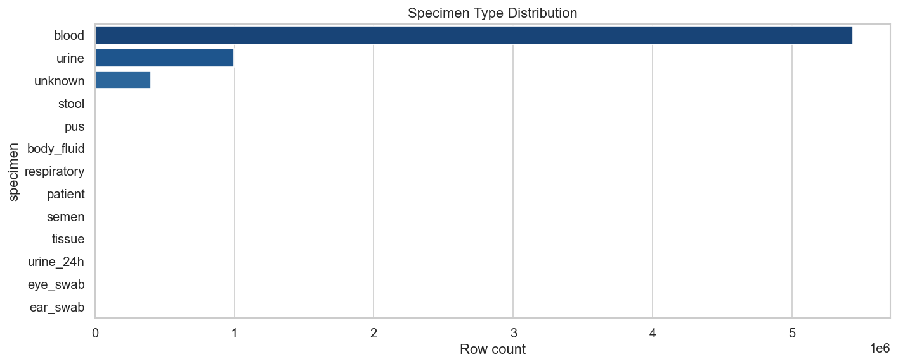
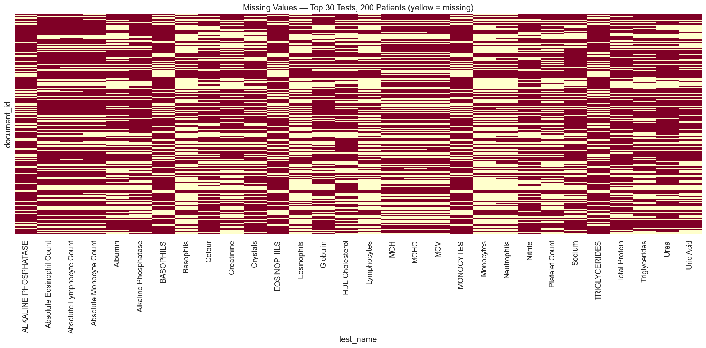
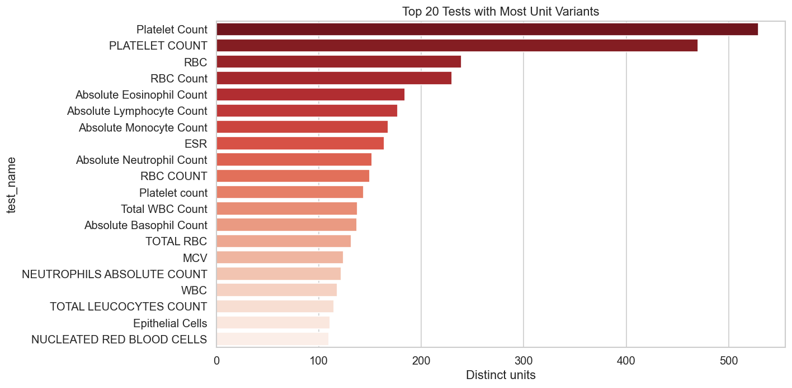
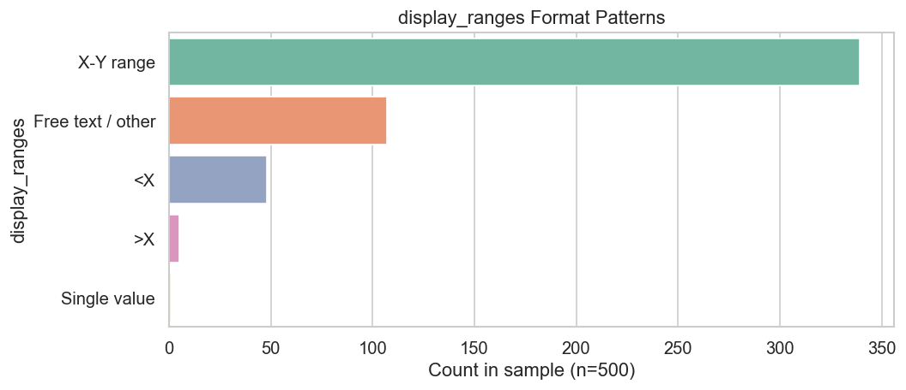
Unsupervised learning identifies 5 distinct patient demographic cohorts, enabling personalized, cluster-specific reference ranges.
Clusters 0 and 4 represent rare patient profiles (extreme lab values) — exactly the cases most likely to be missed by global thresholds.
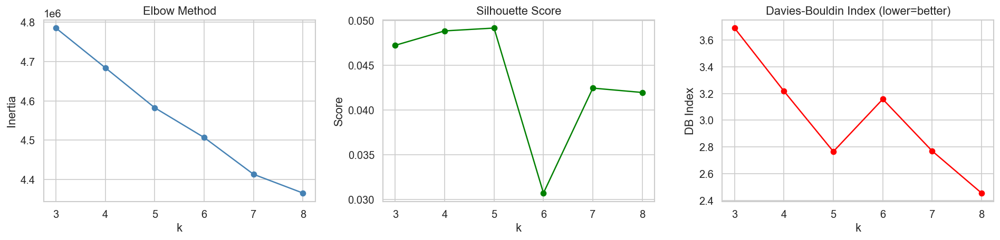
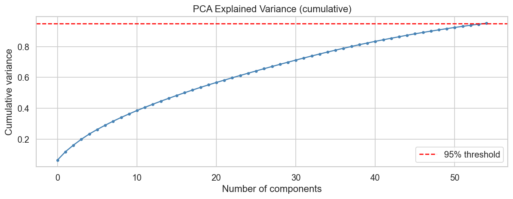
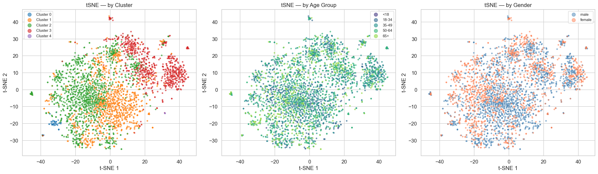
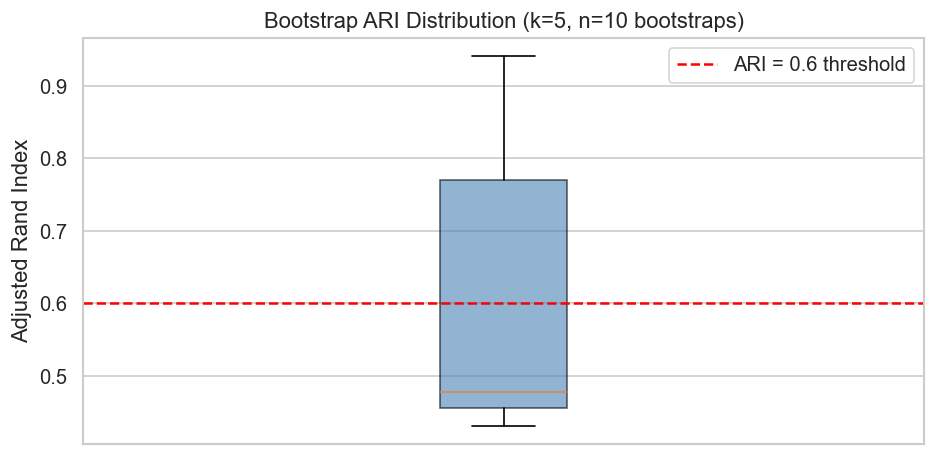
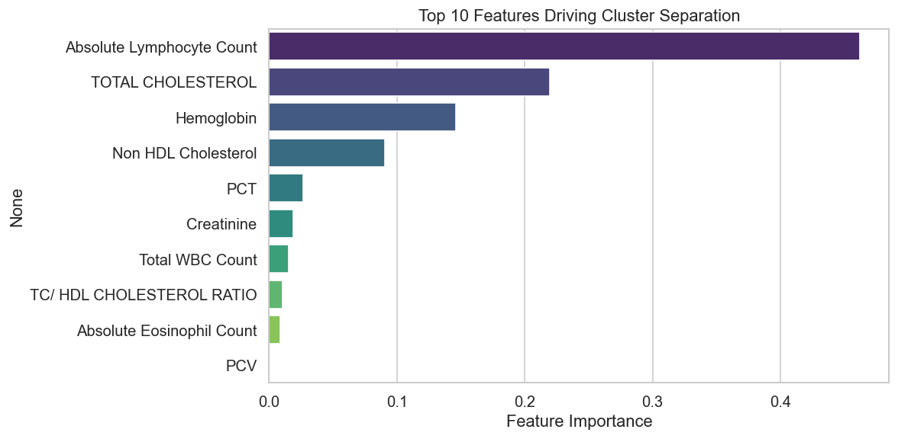
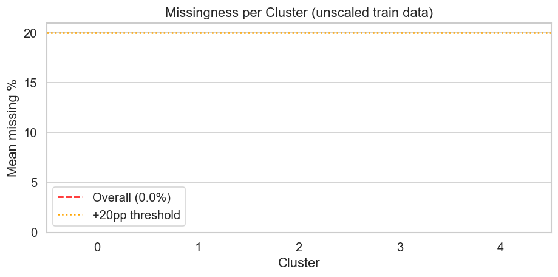
The project's key innovation: 70% of cluster-specific thresholds diverge >10% from global population ranges — proving that one-size-fits-all diagnostics systematically mis-classify patients.
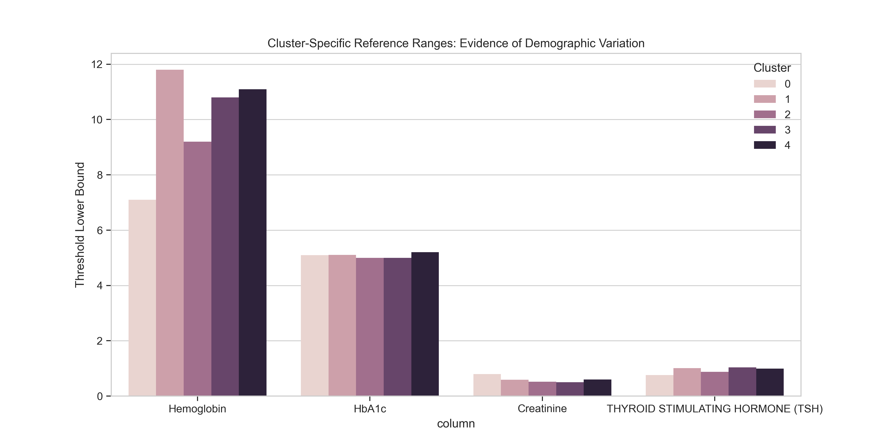
Four baseline classifiers trained to simultaneously detect 6 disease conditions per patient.
Labels are derived by comparing each patient's biomarker values against their cluster's 5th–95th percentile thresholds. The biomarker groups are:
| Model | Anaemia | Diabetes Risk | Dyslipidemia | Kidney Risk | Liver Stress | Thyroid Abn. | Macro F1 |
|---|---|---|---|---|---|---|---|
| RF Base | 0.4475 | 0.4087 | 0.4321 | 0.4497 | 0.5628 | 0.5156 | 0.4694 |
| RF Balanced | 0.4496 | 0.4170 | 0.4339 | 0.4460 | 0.5639 | 0.5185 | 0.4715 |
| KNN | 0.3250 | 0.2538 | 0.3716 | 0.3776 | 0.4794 | 0.4462 | 0.3756 |
| SVM | 0.3305 | 0.3344 | 0.3566 | 0.3656 | 0.4907 | 0.4456 | 0.3872 |
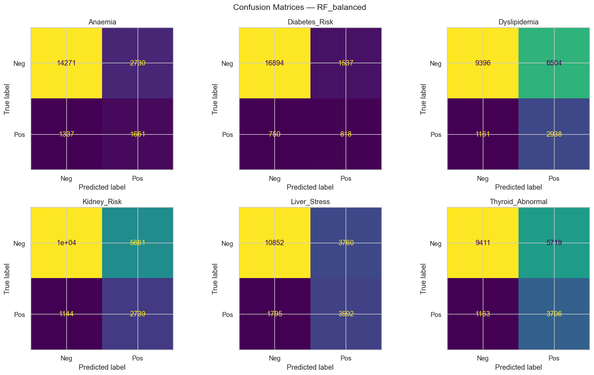
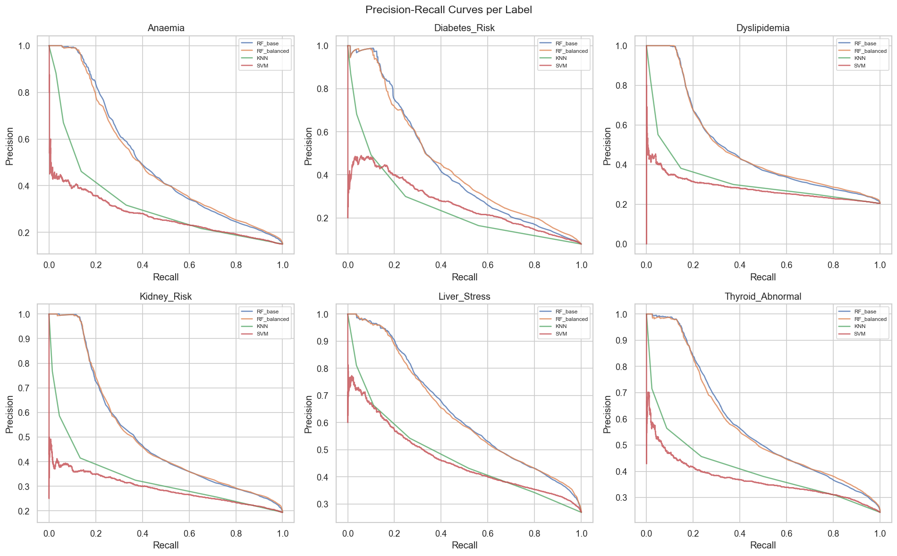
Advanced ensemble techniques with class imbalance handling deliver substantial performance improvements over baselines.
Diabetes Risk is only 8.18% positive — severely imbalanced. Without correction, models learn to predict "negative" always for rare conditions. We apply three strategies:
XGBoost class weight inversely proportional to class frequency. Diabetes_Risk spw=11.29, Liver_Stress spw=2.73
RF automatically adjusts sample weights per label
Synthetic minority oversampling generates new positive examples by interpolating nearest neighbors in feature space
Thresholds were tuned per-label to maximize validation F1, rather than using a fixed 0.5 cutoff. Key tuned thresholds:
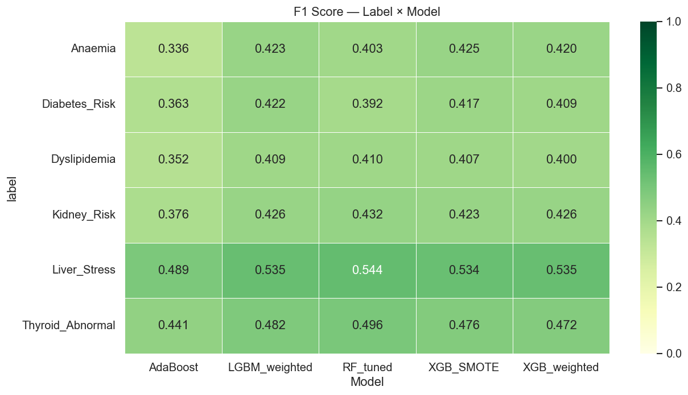
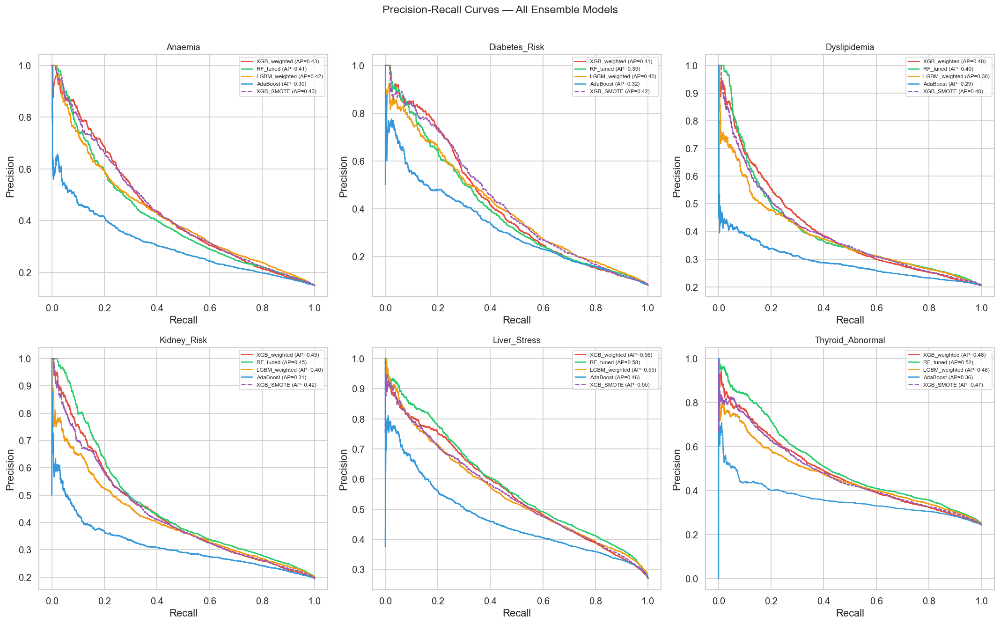
| Model | Anaemia | Diabetes Risk | Dyslipidemia | Kidney Risk | Liver Stress | Thyroid Abn. | Macro F1 |
|---|---|---|---|---|---|---|---|
| XGB_weighted ★ | 0.866 | 0.866 | 0.744 | 0.758 | 0.772 | 0.793 | 0.444 |
| RF_tuned | 0.867 | 0.860 | 0.751 | 0.761 | 0.782 | 0.804 | 0.446 |
| LGBM_weighted | 0.862 | 0.862 | 0.742 | 0.756 | 0.773 | 0.792 | 0.450 |
| AdaBoost | 0.970 | 0.996 | 0.958 | 0.982 | 0.968 | 0.995 | 0.844* |
| XGB_SMOTE | 0.9999 | 0.9999 | 0.9998 | 0.9999 | 0.9997 | 0.9996 | 0.994† |
★ Best model on real test data · * AdaBoost high AUC reflects ensemble boosting dynamics · † XGB_SMOTE near-perfect AUC may reflect synthetic data leakage — XGB_weighted selected for deployment
XGB_weighted selected as the best overall model — balancing real-world precision-recall tradeoffs without synthetic data inflation.
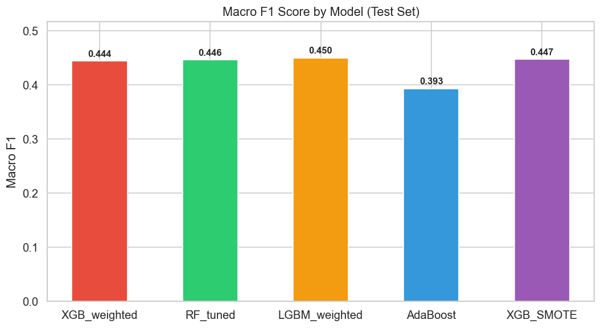